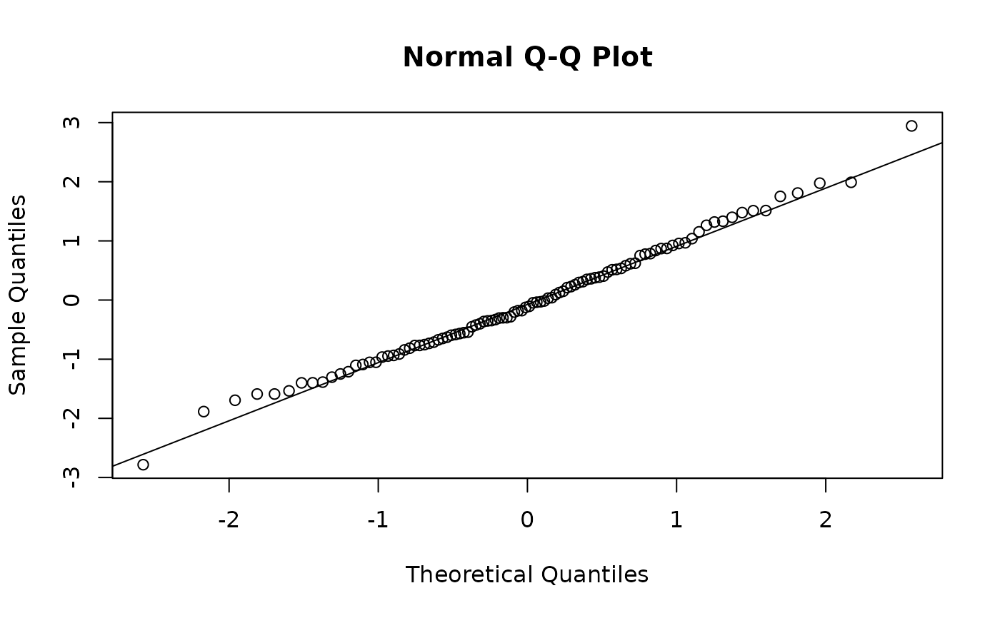

"osa" gives one-step-ahead (conditional quantile) residuals via
TMB::oneStepPredict(): standard-normal under a correctly specified
model, valid under correlated observations where pearson residuals
mislead.
Arguments
- object
A
frmtmb_fit.- type
"response","pearson","deviance", or"osa".- osa_method
Method for
TMB::oneStepPredict(); defaults to"fullGaussian"for gaussian models and"oneStepGeneric"otherwise. A truncated, censored or ordinal response always uses"oneStepGeneric"(a truncated gaussian is not gaussian) with the integration domain and discrete support taken from thetrunc()bounds or the censoring window, which must then be the same for every row.- ...
For
type = "osa": passed toTMB::oneStepPredict().
Details
On a trunc()ed response, "response" residuals are taken against
the truncated mean E[Y | lb <= Y <= ub]. "pearson" divides by the
untruncated family variance, so it is conservative there. "osa"
builds its conditional CDF on [lb, ub] (see osa_method).
On a cens()ed response, "osa" returns NA for every censored
row: what is observed there is an event (Y > c), not a value, and
an event has no one-step CDF. The uncensored rows get residuals
conditional on the censoring events, which needs one censoring point
per side (type-I censoring); row-varying censoring times and interval
censoring are refused. dharma_residuals() is not a substitute on a
censored fit, because simulate.frmtmb_fit() draws the latent
uncensored response by default (as brms's posterior_predict()
does) and those draws are not comparable with the observed censored
values; simulate(censored = TRUE) makes them comparable, but the
resulting point mass at each censoring point is not a distribution
DHARMa's rank transform can use.
Ordinal responses
An ordinal response has no mean, so "response" and "pearson"
score the categories by the integer codes 1..K the likelihood
itself uses: "response" is y - E[Y] with
E[Y] = sum_k k * P(y = k) taken from fitted()'s category
probabilities, and "pearson" divides by the standard deviation of
that same distribution. This is the frequentist point-estimate form
of what brms's residuals() reports on an ordinal fit (there, the
observed category minus a drawn one). It is a residual on a SCORE,
not on the ordinal scale, so read it for gross lack of fit and
pattern, not as a calibrated quantity: "osa" and
dharma_residuals() give residuals that use only the order.
"deviance" is refused, as it is for every family without a
standard unit deviance.
"osa" uses "oneStepGeneric" over the discrete support 1..K,
which makes the residuals randomized quantile residuals.
Deviance residuals
"deviance" returns sign(y - E[Y]) * sqrt(w * d), where the unit
deviance d = 2 * (loglik of the saturated fit - loglik at the fitted value) is taken with the dispersion parameter held at its estimate,
and w is the weights() addition term (1 by default). For the
exponential-dispersion families this is the glm unit deviance, so a
fixed-effect fit reproduces residuals(glm(...), type = "deviance")
exactly.
Supported families: gaussian, poisson, binomial, bernoulli,
Gamma, exponential, inverse.gaussian, negbinomial
(nbinom2), nbinom1, geometric, beta, and tweedie. Every
other family is refused: ordinal, mixture, multinomial, hurdle,
zero-inflated and location-shift families have no standard unit
deviance. nbinom1 follows glmmTMB and evaluates the
negative-binomial size at the fitted row's mu / phi; letting the
size follow the saturated mean is not a deviance (the difference goes
negative). trunc()ed and cens()ed responses are refused as well,
because the fitted likelihood there is not the family's own density.
A gaussian response with se() has no common dispersion for a raw
squared residual to be measured against, so the known variance
enters as a glm prior weight sigma^2 / s_i^2 on top of w, where
s_i is the row's residual sd (the quantity "pearson" divides
by). Without se() that weight is 1 and nothing changes; se(x)
alone maps sigma out at 1, leaving the familiar 1 / se_i^2 of a
known-variance weighted fit.
In a mixed model the residuals are conditional on the random-effect
modes, the glmmTMB convention: E[Y] is fitted(), not the
population-level mean.
Residual correlation terms
Under an ar(), ma(), arma(), cosy() or unstr() term (see
frmtmb-autocor) the residual covariance of a group is D R D with
R unit-diagonal, so the marginal residual SD of a row is still
sigma and "pearson" is unchanged - it divides by exactly that.
What "response" and "pearson" do NOT do is decorrelate: plotted
against time within a group they still show the fitted
autocorrelation, which is the intended reading. "osa" is refused,
because the taped likelihood is a joint density per group rather
than a product of per-observation terms; dharma_residuals() works,
since simulate() draws one correlated residual per group.
deviance(fit) is unrelated: it stays -2 * logLik(fit) (the lme4
convention), which for a mixed model is the Laplace-approximated
marginal deviance and does not equal sum(residuals(fit, type = "deviance")^2).
Examples
set.seed(1)
dd <- data.frame(x = rnorm(100), g = factor(rep(1:10, 10)))
dd$y <- rpois(100, exp(0.3 + 0.4 * dd$x + rnorm(10, 0, 0.6)[dd$g]))
fit <- frm(bf(y ~ x + (1 | g)) + poisson(), data = dd)
# raw and variance-standardized residuals
head(residuals(fit))
#> 1 2 3 4 5 6
#> -0.4940281 -0.9276322 -0.7935414 0.3403558 2.0031268 0.4382665
head(residuals(fit, type = "pearson"))
#> 1 2 3 4 5 6
#> -0.7028714 -0.9631367 -0.8908094 0.2086995 2.0062658 0.2738239
# the usual overdispersion check for a poisson fit
sum(residuals(fit, type = "pearson")^2) / df.residual(fit)
#> [1] 0.9176762
# one-step-ahead quantile residuals are standard normal under a
# correctly specified model, whatever the family
r <- residuals(fit, type = "osa")
qqnorm(r); qqline(r)
